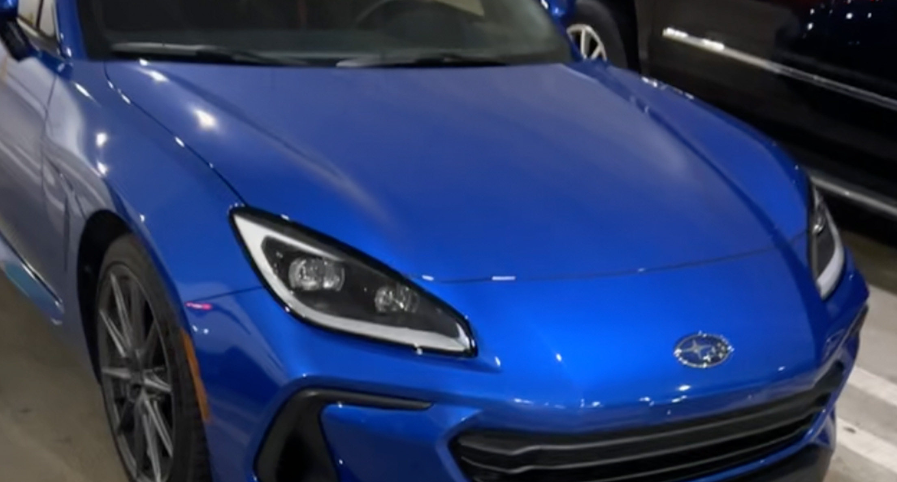

New Subaru BRZ and Toyota GR86 Shortage

The next generation Subaru BRZ and its technical brother, the Toyota GR86 went on sale in Fall 2021 for the 2022 model year, yet 6 months there is still a shortage. The BRZ/86 is a compact sports car starting at $27,995 for the Subaru and $27,700 for the Toyota making it one of the more affordable sports car offerings. Additionally, both variants are available with a six-speed manual – which is quite rare these days – with a six-speed automatic available as an option. The shortage is due to firstly, the global chip shortage impacting all automakers and due to high demand for the car. The new BRZ/86 have received excellent reviews from the media, such as a 9.5/10 from Car and Driver, and are popular amongst enthusiasts for their affordable price and the availability of a manual option. If you are ordering a new manual BRZ/86 today you can expect to wait anywhere between a month to three months depending on the spec and color, although you can probably pick up an automatic tomorrow – but you shouldn’t. This goes to show that manuals remain popular amongst enthusiasts and more car manufacturers should take note.
| Specs | |
|---|---|
| Starting Price | $2,700 |
| Engine | 2.4L 4-Cylinder |
| Transmition | six-speed manual or automatic |
| 0-60 mph | 5.8 Seconds |
| Top Speed | 150 mph |